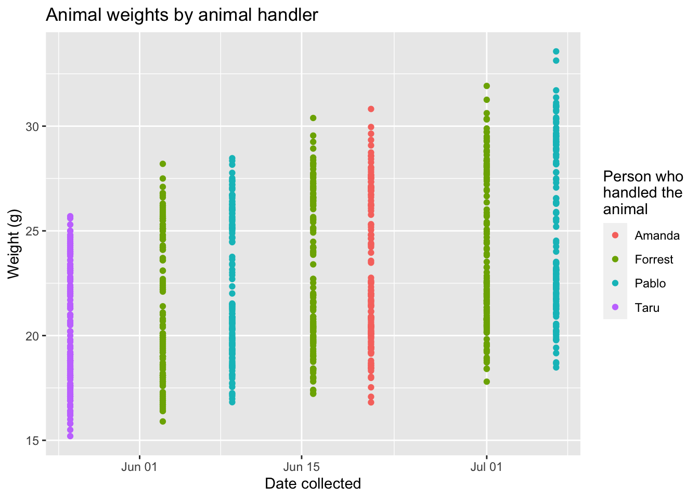

Chapter 5 Colony forming units to determine bacterial counts
5.1 Data description
The data are collected in a spreadsheet with multiple sheets. The first sheet (named “[x]”) is used to record some metadata for the experiment, while the following sheets are used to record CFUs counts from the plates used for samples from each organ, with one sheet per organ. For example, if you plated data from both the lung and spleen, there would be three sheets in the file: one with the metadata, one with the plate counts for the lung, and one with the plate counts for the spleen.
The metadata sheet is used to record information about the overall process of plating the data. Values from this sheet will be used in calculating the bacterial load in the original sample based on the CFU counts. This spreadsheet includes the following columns:
organ: Include one row for each organ that was plated in the experiment. You should name the organ all in lowercase (e.g., “lung,” “spleen”). You should use the same name to also name the sheet that records data for that organ for example, if you have rows in the metadata sheet for “lung” and “spleen,” then you should have two other sheets in the file, one sheet named “lung” and one named “spleen,” which you’ll use to store the plate counts for each of those organs.prop_resuspended: In this column, give the proportion of that organ that was plated. For example, if you plated half the lung, then in the “lung” row of this spread sheet, you should put 0.5 in theprop_resuspendedcolumn.total_resuspended_uL: This column contains an original volume of tissue homogenate. For example, raw lung tissue is homogenized in 500 uL of PBS in a tube containing metal beads.og_aliquot_uL: 100 uL of th total_resuspended slurry would be considered an original aliquot and is used to peform serial dilutions.dilution_factor: Amount of the original stock solution that is present in the total solution, after dilution(s)plated_uL: Amount of suspension + diluent plated on section of solid agar
5.2 Read in data
library(readxl)
library(dplyr)
library(purrr)
library(tidyr)
library(stringr)
library(tidyverse)
library(gridExtra)
library(ggplot2)
library(ggpubr)
#Replace w/ path to CFU sheet
path <- c("DATA/Copy of baa_cfu_sheet.xlsx")
sheet_names <- excel_sheets(path)
sheet_names <- sheet_names[!sheet_names %in% c("metadata")]
merged_data <- list()
for(i in 1:length(sheet_names)){
data <- read_excel(path, sheet = sheet_names[i]) %>%
mutate(organ = paste0(sheet_names[i]))
data <- data %>%
#mutate(missing_col = NA) %>%
mutate_if(is.double, as.numeric) %>%
mutate_if(is.numeric, as.character) %>%
pivot_longer(starts_with("dil_"), names_to = "dilution",
values_to = "CFUs") %>%
mutate(dilution = str_extract(dilution, "[0-9]+"),
dilution = as.numeric(dilution))
merged_data[[i]] <- data
}
all_data <- bind_rows(merged_data, .id = "column_label") %>%
select(-column_label)
head(merged_data)## [[1]]
## # A tibble: 342 × 8
## count_date who_plated who_counted groups mouse organ dilution CFUs
## <chr> <chr> <chr> <chr> <chr> <chr> <dbl> <chr>
## 1 "\"February 21 2022… BK BK group… A lung 0 TNTC
## 2 "\"February 21 2022… BK BK group… A lung 1 TNTC
## 3 "\"February 21 2022… BK BK group… A lung 2 TNTC
## 4 "\"February 21 2022… BK BK group… A lung 3 53
## 5 "\"February 21 2022… BK BK group… A lung 4 9
## 6 "\"February 21 2022… BK BK group… A lung 5 4
## 7 "\"February 21 2022… BK BK group… A lung 6 2
## 8 "\"February 21 2022… BK BK group… A lung 7 1
## 9 "\"February 21 2022… BK BK group… A lung 8 0
## 10 "\"February 21 2022… BK BK group… B lung 0 TNTC
## # … with 332 more rows
##
## [[2]]
## # A tibble: 112 × 8
## count_date who_plated who_counted groups mouse organ dilution CFUs
## <chr> <chr> <chr> <chr> <chr> <chr> <dbl> <chr>
## 1 "\"April 25 2022\"" JR JR group_1 A sple… 0 TNTC
## 2 "\"April 25 2022\"" JR JR group_1 A sple… 1 TNTC
## 3 "\"April 25 2022\"" JR JR group_1 A sple… 2 53
## 4 "\"April 25 2022\"" JR JR group_1 A sple… 3 9
## 5 "\"April 25 2022\"" JR JR group_1 A sple… 4 4
## 6 "\"April 25 2022\"" JR JR group_1 A sple… 5 2
## 7 "\"April 25 2022\"" JR JR group_1 A sple… 6 1
## 8 "\"April 25 2022\"" JR JR group_1 A sple… 7 0
## 9 "\"April 25 2022\"" JR JR group_1 B sple… 0 TNTC
## 10 "\"April 25 2022\"" JR JR group_1 B sple… 1 TNTC
## # … with 102 more rowshead(all_data)## # A tibble: 6 × 8
## count_date who_plated who_counted groups mouse organ dilution CFUs
## <chr> <chr> <chr> <chr> <chr> <chr> <dbl> <chr>
## 1 "\"February 21 2022\… BK BK group… A lung 0 TNTC
## 2 "\"February 21 2022\… BK BK group… A lung 1 TNTC
## 3 "\"February 21 2022\… BK BK group… A lung 2 TNTC
## 4 "\"February 21 2022\… BK BK group… A lung 3 53
## 5 "\"February 21 2022\… BK BK group… A lung 4 9
## 6 "\"February 21 2022\… BK BK group… A lung 5 45.5 Exploratory analysis
Dimensions of input data:
Based on the input data, data were collected for the following organ or organs:
The following number of mice were included for each:
The following number of replicates were recorded at each count date for each experimental group:
The following number of dilutions and dilution level were recorded for each organ:
People who plated and collected the data. Date or dates of counting:
Based on the input data, the plates included in these data were counted by the following person or persons: Based on the input data, the plates included in these data were counted on the following date or dates:
all_data %>%
select(organ, who_plated, who_counted, count_date) %>%
distinct()## # A tibble: 3 × 4
## organ who_plated who_counted count_date
## <chr> <chr> <chr> <chr>
## 1 lung BK BK "\"February 21 2022\""
## 2 lung BK BK "\"April 18 2022\""
## 3 spleen JR JR "\"April 25 2022\""head(all_data)## # A tibble: 6 × 8
## count_date who_plated who_counted groups mouse organ dilution CFUs
## <chr> <chr> <chr> <chr> <chr> <chr> <dbl> <chr>
## 1 "\"February 21 2022\… BK BK group… A lung 0 TNTC
## 2 "\"February 21 2022\… BK BK group… A lung 1 TNTC
## 3 "\"February 21 2022\… BK BK group… A lung 2 TNTC
## 4 "\"February 21 2022\… BK BK group… A lung 3 53
## 5 "\"February 21 2022\… BK BK group… A lung 4 9
## 6 "\"February 21 2022\… BK BK group… A lung 5 4Distribution of CFUs at each dilution:
Here’s a plot that shows how many plates were too numerous to count at each dilution level:
Here is a plot that shows how the CFU counts were distributed by dilution level in the data:
5.6 Identify a good dilution for each sample
# Make all_data into tidy data and filter for CFUs between 10-75
tidy_cfu_data <- all_data %>%
mutate(dilution = str_extract(dilution, "[0-9]+"),
dilution = as.numeric(dilution)) %>%
filter((CFUs >= 5 & CFUs <= 95) | groups == "control") %>%
mutate(CFUs = as.numeric(CFUs))
head(tidy_cfu_data)## # A tibble: 6 × 8
## count_date who_plated who_counted groups mouse organ dilution CFUs
## <chr> <chr> <chr> <chr> <chr> <chr> <dbl> <dbl>
## 1 "\"February 21 2022\… BK BK group… A lung 3 53
## 2 "\"February 21 2022\… BK BK group… A lung 4 9
## 3 "\"February 21 2022\… BK BK group… C lung 5 8
## 4 "\"February 21 2022\… BK BK group… D lung 3 53
## 5 "\"February 21 2022\… BK BK group… A lung 2 92
## 6 "\"February 21 2022\… BK BK group… A lung 4 75.7 Calculate CFUs from best dilution/Estimate bacterial load for each sample based on good dilution
# Calculating CFU/ml for every qualifying replicate between 10-75 CFUs. Column binding by organ name to the metadata sheet via inner_join().
meta <- read_excel(path, sheet = "metadata")
tidy_cfu_meta_joined <- inner_join(meta, tidy_cfu_data) %>%
group_by(groups) %>%
mutate(CFUs_per_ml = (CFUs * (dilution_factor^dilution) *
(total_resuspension_mL/volume_plated_ul) * 1000)) %>%
select(organ, count_date, who_plated, who_counted, groups, mouse, dilution,
CFUs, CFUs_per_ml) %>%
ungroup()## Joining, by = "organ"head(tidy_cfu_meta_joined)## # A tibble: 6 × 9
## organ count_date who_plated who_counted groups mouse dilution CFUs
## <chr> <chr> <chr> <chr> <chr> <chr> <dbl> <dbl>
## 1 lung "\"February 21 2022\… BK BK group… A 3 53
## 2 lung "\"February 21 2022\… BK BK group… A 4 9
## 3 lung "\"February 21 2022\… BK BK group… C 5 8
## 4 lung "\"February 21 2022\… BK BK group… D 3 53
## 5 lung "\"February 21 2022\… BK BK group… A 2 92
## 6 lung "\"February 21 2022\… BK BK group… A 4 7
## # … with 1 more variable: CFUs_per_ml <dbl>5.8 Create initial report information for these data
tidy_lung_cfu_plot <- tidy_cfu_meta_joined %>%
filter(organ == "lung") %>%
mutate(group = fct_relevel(groups, "group_1", "group_2", "group_3", "group_4")) %>%
ggplot(aes(x = groups, y = log10(CFUs_per_ml), fill = groups))+
stat_boxplot( aes(x = groups, y = log10(CFUs_per_ml)),
geom='errorbar', linetype=1, width=0.5)+
geom_boxplot(aes(group = groups), fill = NA, show.legend = FALSE, color = "lightgrey")+
geom_point(show.legend = FALSE)+
labs(title = paste0("CFUs in early infected mouse lung"), x = "Group", y = "log10(CFU/mL)",
color = "Group")+
guides(shape = "none")+
theme_minimal()+
stat_compare_means(label = "p.signif", method = "t.test", ref.group = "group_1") +
scale_y_continuous(expand = c(0, 0), limits = c(0, 8))
tidy_lung_cfu_plot
5.9 Sample ANOVA
cfu_stats <- tidy_cfu_meta_joined %>%
group_by(organ) %>%
nest() %>%
mutate(aov_result = map(data, ~aov(CFUs_per_ml ~ groups, data = .x)),
tukey_result = map(aov_result, TukeyHSD),
tidy_tukey = map(tukey_result, broom::tidy)) %>%
unnest(tidy_tukey, .drop = TRUE) %>%
separate(contrast, into = c("contrast1", "contrast2"), sep = "-") %>%
select(-data, -aov_result, -tukey_result, -term, -null.value)# %>%## Warning: The `.drop` argument of `unnest()` is deprecated as of tidyr 1.0.0.
## All list-columns are now preserved.
## This warning is displayed once every 8 hours.
## Call `lifecycle::last_lifecycle_warnings()` to see where this warning was generated. # filter(adj.p.value <= 0.05)
cfu_stats## # A tibble: 9 × 7
## # Groups: organ [2]
## organ contrast1 contrast2 estimate conf.low conf.high adj.p.value
## <chr> <chr> <chr> <dbl> <dbl> <dbl> <dbl>
## 1 lung group_2 group_1 -60953. -138742. 16836. 0.171
## 2 lung group_3 group_1 -63903. -135699. 7893. 0.0963
## 3 lung group_4 group_1 -26214. -102416. 49987. 0.793
## 4 lung group_3 group_2 -2950. -69900. 64000. 0.999
## 5 lung group_4 group_2 34739. -36915. 106393. 0.569
## 6 lung group_4 group_3 37689. -27410. 102787. 0.417
## 7 spleen group_2 group_1 -6565 -13529. 399. 0.0656
## 8 spleen group_3 group_1 -7310 -13341. -1279. 0.0178
## 9 spleen group_3 group_2 -745. -6776. 5286. 0.943